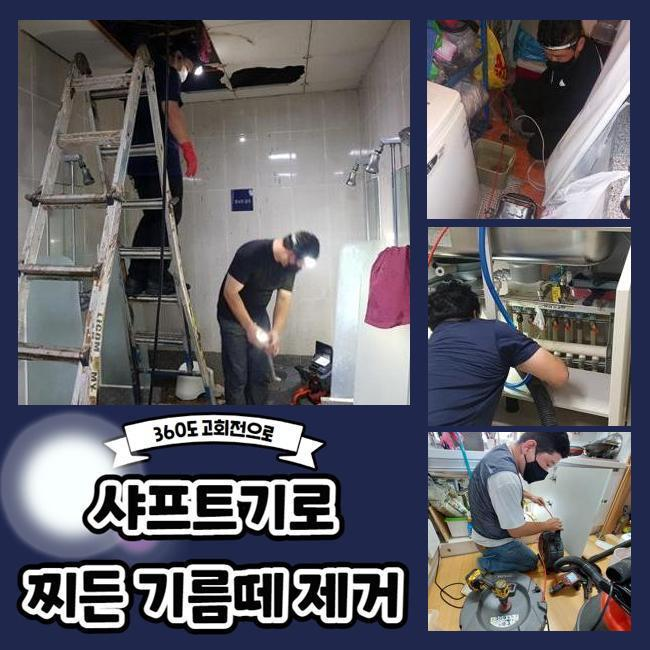
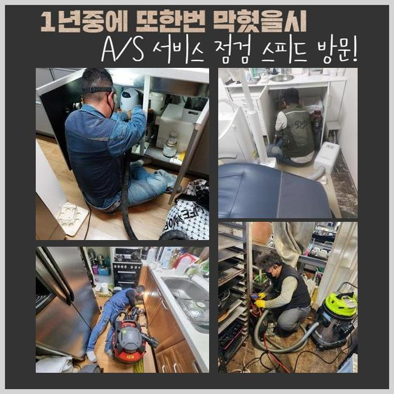
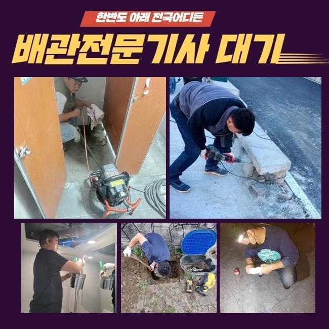
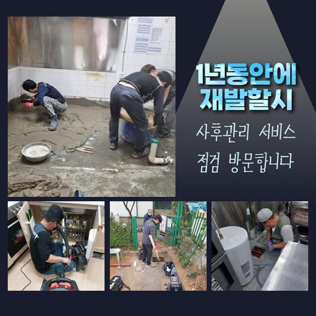
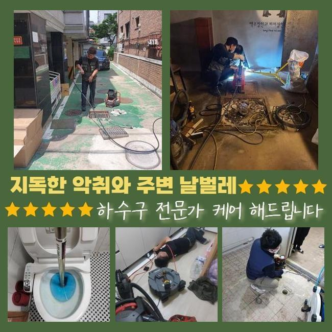
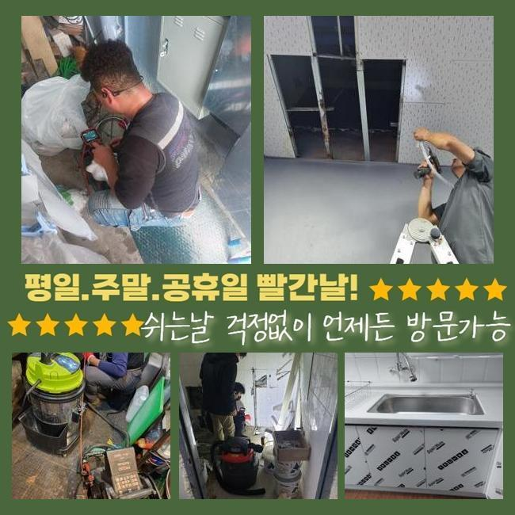
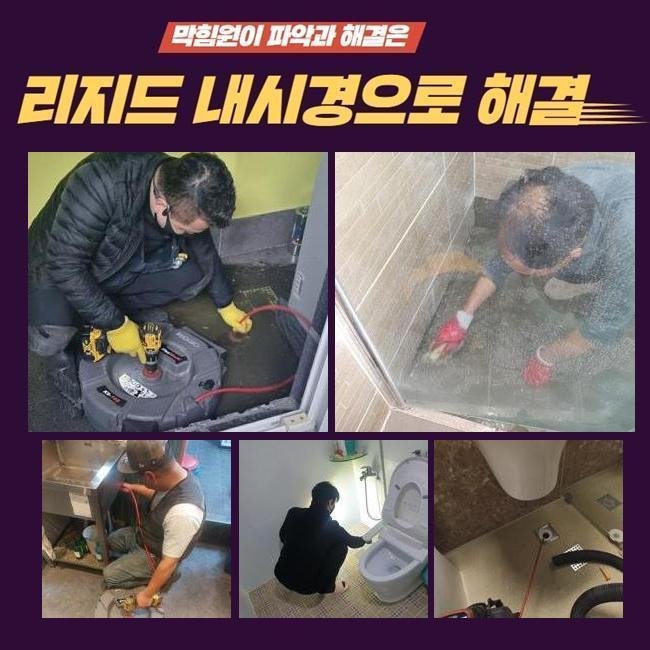

🏠 석우동싱크대배수구막힘 횡주관청소 누수
용인 석우동 싱크대막힘 전문 시공 후기

📋 작업 개요
- 위치: 용인 석우동, 석우동, 용인
- 서비스 유형: 싱크대막힘, 하수구막힘, 배관막힘, 집수정막힘, 누수수리, 역류해결, 뚫는업체, 배관청소, 고압세척
- 작업 일시: 2025. 1. 7. 10:53
- 업체명: 하수구수사대 (010-5615-2118)
🔍 문제 상황
석우동싱크대배수구막힘 횡주관청소 누수
하수구시스템이 무너졌을때 간단하게 끝난다면 문제없지만 방치할경우 막대한피해로 불거질수가 있습니다
문제가 나타났을때 조치하는게 좋은데 혹시나 방치하신다면 업체를통하여 막힌배관을 해결하시는게 좋습니다
오늘 내방했던 현장장소는 상가시설인데 하수관이 막혀서 빠른 출동을 요청하셨죠
하수구가 막히면 물을 사용하지 못하니 1시간 안팎으로 방문드려요
상가시설안 식당쪽에있는 주방부분에서 막힘증상이 발현되었다고 하셨는데요
하루지나고 영업을 진행해야하기에 신속히 해결해야했죠
막힌이유가 무엇인지 파악해내려고 서둘렀어요
식당입구쪽과 내부쪽 부분들도 살펴보니 트렌치배관과 연결되어있는 메인관도 막혀버린 상황이었죠
고객님께 상황과 관련하여 알려드리고나서 작업에 들어갔죠
하수구작업에 들어갈땐 필수로 의뢰자분께 작업과정을 안내하고있죠

🔎 원인 분석
💡 전문가 진단: 정밀 진단 장비를 사용하여 슬러지의 고착 여부를 판명하고 타격/세척 작업을 실시했습니다.
샤프트장비를 배관속에 투입해 안쪽에쌓인 오염물질들을 꺼내줍니다
식당이다보니 기름기가 가득했어요
조심스러운 강도조절로 하수구내부에 쌓인이물을 제거해주었어요
작업중간에 제거작업이 깔끔하게 이뤄지는지 내시경장비로 체크까지 해주었죠
물이넘치던 하수구였으므로 가능한 서둘러서 크랙이 발생하지않게 하수구청소를 진행했는데 2차적인 문제없이 역류를해결해 안심할수가 있었습니다
외부하수구를 작업한후 건물내부로 자리를옮겼죠
부엌에 위치하는 싱크대배관이 막히게되어 하수구카메라를 써서 막힌이유에 대해 분석을 진행해주었는데요
원인파악을 해봤더니 기름기가 석회물로 변형되어 막히게된걸로 판단되었죠
석회물을 없애기위해 플렉스샤프트로 분쇄시켰어요
다음으로는 잔여되어진 찌꺼기를 흡입기로 빨아들여주는 작업으로 이물제거를 완료했죠
배관이 막히는것은 여러원인을 통하여 막히게되는데 주요한이유는 잔해물질들 때문이라고 할수있어요

🔧 작업 과정
그렇기때문에 음식물이나 기름기가 배관속으로 투입되지않도록 주의하시는게 좋으며 주기적인 배관상태를 점검하셔서 상태가 어떠한지 살펴봐야 한답니다
오랜시간 작업하여 트렌치관 내부에 쌓여있었던 기름때와 잔해물질들을 처리할수있었죠
집수정도 함께 막힘현상이 있는걸 알아냈어요 집수정은 석션기나 샤프트기로는 뚫는것은 쉽지않기에 고압세척기가 필요했죠
사용하기전에 의뢰자에게 양해를구한뒤 고압청소작업 필요성에 대하여 상세히 안내드렸죠
고압세척기는 강한압이 사용되기 때문에 손상되지 않도록 주의함이 요구됩니다
주의하지 않는다면 배관내벽에 균열이생기며 2차피해로 불거질수있죠
집수정안쪽에 다량의 이물이 확인되어 고압청소기로 쌓여있는 잔해물들을 밀어내준뒤 제거해냈답니다
안쪽과 바깥쪽을 전체로 작업했더니 배수상황이 원활히 복구된걸 살펴볼수가 있었습니다
식당처럼 영업현장은 막대한 경제적손해로 이어지므로 시간구애없이 빨리 방문해드리고 있어요
싱크대 거름망과 배관트랩을 설치하여 악취나 막힘까지 방지할수있어요
확실히 처리해내는 해결방안은 막힘징조를 보았을때 즉각적으로 업체에 의뢰하여 맡기시는것이죠
앞전에 말씀드렸지만 막힘을 방치하면 역류나 누수같은 문제들로 이어질수있죠
막힘증세를 처리하고자 셀프방법을 다방면으로 이용 하셨을텐데 가벼운 방법으로 처리하는 방식들을 알려드려보죠
온수의물이나 배관클리너 제품을 적당한 양으로 하수구입구에 흘려보내시고 뚫리지못하면 전문적인 조치를 받으시는게 좋습니다
무리하여 시도하실경우 하수구 손상문제가 발생할 가능성이 있으므로 적절한 양을 통해 시도바래요
어떠한 곳이라도 배수관이 막히게된다면 불편할수밖에 없답니다
저흰 가정집과 음식점 다세대건물등 어떤장소라도 방문해드립니다


✅ 작업 완료
배관수리에 들어갈때 분명한 수립계획으로 공개해야지만 믿을수가 있으실거에요
작업견적에 대해 먼저 파악하여 비용과 관련하여 확실하게 공개합니다
씽크대나 욕실배관은 석션장비로만 해결된다면 5만원정도로 책정이되고 있으니 참고하세요!
이것말고도 궁금한것들이 있으면 아무때나 전화주시면 세세한 상담을 통하여 도와드릴테니 걱정마세요!
막힘증상 발생했다면 빠르게 대응하여 피해보지 마세요!




⚠️ 베란다 누수 및 방수 관리 방법
- ✅ 비가 많이 올 때 창틀 주변이나 아래층 천장에 얼룩이 생기는지 정기적으로 확인해 보세요.
- ✅ 우수관 주변 실리콘 마감이 들뜨거나 깨진 틈새가 있는지 손상 여부를 수시로 체크하세요.
- ✅ 베란다 바닥 타일의 줄눈(메지)이 소실되면 그 틈으로 물이 침투하여 누수가 유발됩니다.
- ✅ 누수 의심 증상 발견 시 방치하면 아래층 손실이 커지므로 즉시 전문가의 진단을 받으십시오.
💡 핵심 정리
- 확실한 장비 작업(내시경 점검 및 샤프트 스케일링)으로 원인을 뿌리 뽑습니다.
- 작업 후 1년 이내에 동일한 부위 재발 시 100% 무상 A/S 서비스를 보장합니다.
- 서울 · 경기 · 인천 전 지역에 24시간 언제든 긴급 출동할 수 있도록 항시 대기 중입니다.
❓ 자주 묻는 질문 (FAQ)
🚨 용인 석우동 싱크대막힘 문제로 고민이신가요?
정확한 원인 진단과 확실한 시공으로 재발 없는 해결을 약속드립니다.
24시간 긴급 출동 | 서울 · 경기 · 인천 전지역 | 1년 내 재발 시 무상 A/S